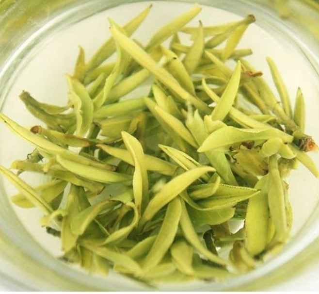
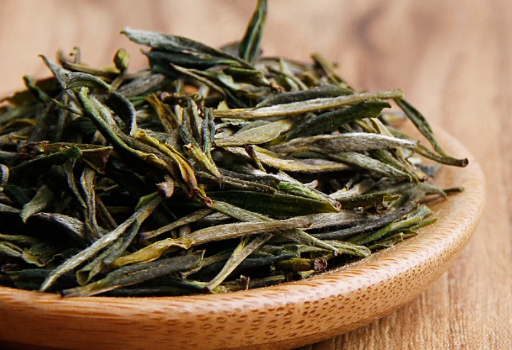
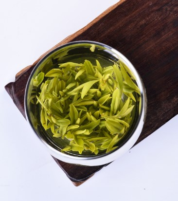
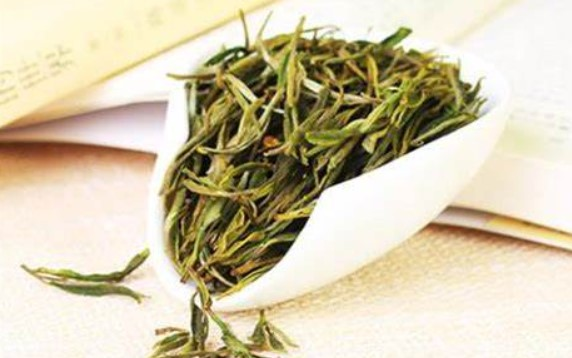

霍山黄芽
霍山黄芽，安徽省霍山县特产，国家地理标志产品。霍山黄芽依其品质分为特一级、特二级、一级和二级。外形挺直微展，色泽黄绿披毫，香气清香持久，汤色黄绿明亮，滋味浓厚鲜醇回甘，叶底微黄明亮。2006年12月，霍山黄芽成功获批国家地理标志保护产品称号。
产品特点
霍山黄芽依其品质分为特一级、特二级、一级和二级。外形挺直微展，色泽黄绿披毫，香气清香持久，汤色黄绿明亮，滋味浓厚鲜醇回甘，叶底微黄明亮。
历史渊源
西汉，霍山县有群众种植茶树。
唐元和十一年（816年），唐宪宗诏寿州以兵三千保其境内之茶园。
明代，霍山黄芽被列为贡品。
产地环境
霍山县属北亚热带湿润季风气候区，地处南北气候过渡带，受季风影响较大，四季分明。全县年平均降水量为1366毫米，酷暑和严寒极少，冷热较为适中。霍山县总体为山地地貌，地势由东南向西北倾斜。依次可分为中山、低山和丘陵畈区，并间有一些小型的河谷盆地。海拔500-800米，山体破碎，坡度较缓，土地肥沃，水源充足，适宜茶树生长。
生产情况
截至2017年底，霍山县有绿色有机无公害茶园15.12万亩，茶企400多家，年产茶叶6300吨，远销欧美30多个国家和地区。
产品荣誉
2006年12月，霍山黄芽成功获批国家地理标志保护产品称号。
2020年5月20日，入选2020年第一批全国名特优新农产品名录。
2020年7月20日，霍山黄芽入选中欧地理标志首批保护清单。
